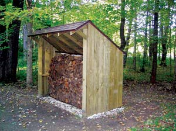

I built this woodshed using the plan in A Timber-Frame Woodshed as a starting point. I made some minor modifications from the original plans, but all in all it looks like it will last well into the 22nd century, and it was an empowering experience. I have sent the pictures to numerous friends, just as one would with a newborn child!
|
 JERRY GREEN Jerry’s woodshed is the spittin’ image of the one featured in issue no. 151 of Mother Earth News. |
|
|